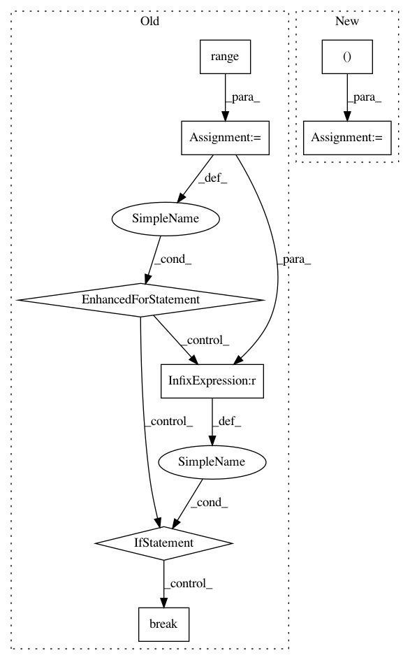

ca337ebba627326cd7b15b454053e31f51b5e441,pgmpy/inference/Sampling.py,BayesianModelSampling,rejection_sample,#BayesianModelSampling#Any#Any#,75
Before Change
while len(sampled) < size:
_size = int((size - len(sampled)) / prob)
_sampled = self.forward_sample(_size)
for i in range(_size):
for var in evidence:
if evidence[var] != _sampled[var][i]:
_sampled.drop(i, inplace=True)
break
prob = max(len(_sampled) / _size, 0.01) // 0.01 assumed if len(sampled) is small or zero
sampled = sampled.append(_sampled)
sampled.reset_index(inplace=True, drop=True)
return sampled[:size]
After Change
_size = int(((size - len(sampled)) / prob) * 1.5)
_sampled = self.forward_sample(_size)
for evid in evidence:
_sampled = _sampled[_sampled.ix[:, evid.var] == evid]
prob = max(len(_sampled) / _size, 0.01)
sampled = sampled.append(_sampled)
sampled.reset_index(inplace=True, drop=True)
return sampled[:size]
In pattern: SUPERPATTERN
Frequency: 3
Non-data size: 8
Instances
Project Name: pgmpy/pgmpy
Commit Name: ca337ebba627326cd7b15b454053e31f51b5e441
Time: 2015-06-16
Author: ankurankan@gmail.com
File Name: pgmpy/inference/Sampling.py
Class Name: BayesianModelSampling
Method Name: rejection_sample
Project Name: nilearn/nilearn
Commit Name: dd7c34ea3480f2ffd8843171676aaa22b1777bd8
Time: 2014-05-28
Author: bertrand.thirion@inria.fr
File Name: nilearn/decomposition/tests/test_canica.py
Class Name:
Method Name: test_canica_square_img
Project Name: eth-cscs/reframe
Commit Name: e3f9de083ed935a54ecb97665e9fb01de976cded
Time: 2020-12-14
Author: jgp@cscs.ch
File Name: cscs-checks/microbenchmarks/gpu/gpu_burn/gpu_burn_test.py
Class Name: GpuBurnTest
Method Name: report_smallest_node